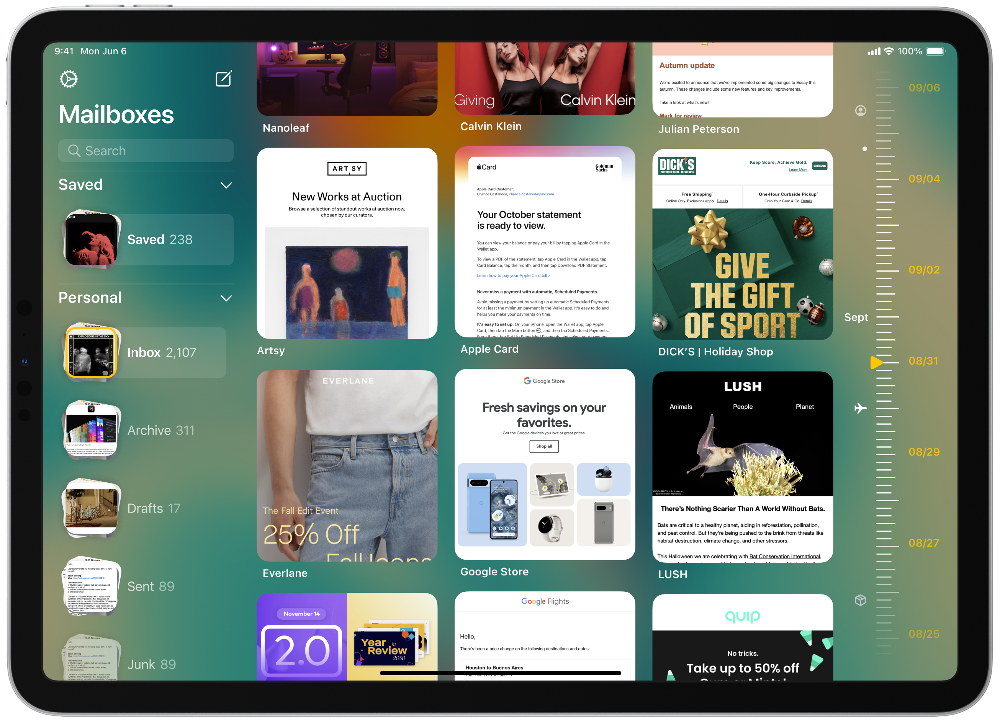

Work
Work
 About
About
 Audio
Audio
Shelf
A new frontier of
self expression.
self expression.
Furniture for your Mind.
Shelf seamlessly integrates your content with the software that organizes it. Navigate effortlessly by swiping through spaces or tapping through tunnels. Experience your ideas, mood boards, and late-night musings in vivid color and exciting new forms. And in a spatial computer, just reach for the note you're looking for.
Concept
Research
Introduction
Staying connected through life changes can be tough, and finding the right time to catch up is a challenge - if we remember to catch up at all.
While scheduling calls is an option, it can feel impersonal, especially with friends and family who aren't just colleagues.
While scheduling calls is an option, it can feel impersonal, especially with friends and family who aren't just colleagues.
In a Nutshell
Free to FT serves as a simple extension app to FaceTime, the leading video call platform in the U.S.
This app makes it easier to remember to reach out without losing the feel of spontaneity.
This app makes it easier to remember to reach out without losing the feel of spontaneity.
A Minecraft Chest
15 unstructured interviews and 3 focus groups (n=31) revealed forgetfulness, limited free time, and not wanting to burden busy loved ones were the top three obstacles to connect.
Other answers included: appearance, awkwardness due to the time in between calls, and not feeling in the mood to talk.
Other answers included: appearance, awkwardness due to the time in between calls, and not feeling in the mood to talk.
Iconography
When questioned about not reconnecting with friends, a surprising finding emerged: Most gave up after around 4 missed calls.
What's worse, the longer it had been since their last conversation, the more uncomfortable it felt to reach out, resulting in a cycle of diminishing contact.
For those going through significant life changes, an average of 5 friendships that they wished hadn't faded were lost in the past 4 years.
What's worse, the longer it had been since their last conversation, the more uncomfortable it felt to reach out, resulting in a cycle of diminishing contact.
For those going through significant life changes, an average of 5 friendships that they wished hadn't faded were lost in the past 4 years.
Introspection
“It” should be compatible with the leading video platform, accessible across various age groups, and minimally determine your availability.
“It” should be easy to set up, easy to invite friends, and be reliable enough to use weekly.
“It” should make it hard to forget to call, reliably inform a user if someone is free, and maintain a sense of spontaneity.
“It” should be easy to set up, easy to invite friends, and be reliable enough to use weekly.
“It” should make it hard to forget to call, reliably inform a user if someone is free, and maintain a sense of spontaneity.
Shelf
Shelf Spaces
You start with a front shelf and magic cabinet

What's inside
Your thoughts, photos, and more wrapped in delightful color

Design
Inspired by the beauty and simplicity of shelves in our homes, Shelf feels familiar yet utterly unique. Its smooth, rounded edges and brilliant color invite you rethink, reshape, and reorganize.
This is notes elevated to an art form - a powerful intersection of form and function. An app that is part of creative conversation. Welcome home.
This is notes elevated to an art form - a powerful intersection of form and function. An app that is part of creative conversation. Welcome home.
A sterile landscape
The most fertile creative spaces feel alive - walls painted in vibrant hues, shelves packed with inspirations, energy in the air. Yet so many of our digital spaces feel cold and sterile by comparison.
I envisioned something different. A space with personality. Color with purpose. Objects placed with intention, designed for introspection.
I envisioned something different. A space with personality. Color with purpose. Objects placed with intention, designed for introspection.
Magic Cabinet
A tool for bursts of emotion and originality
Accessible everywhere
Spaces that grow with you
Magic Cabinet
Magic Cabinet makes trying out new colors a breeze. And because it's built into every shelf, it can add items as fast as you think them.
As your shelves overflow, excess items waterfall gently into the cabinet for safekeeping. Or use it to move many items between shelf spaces.
As your shelves overflow, excess items waterfall gently into the cabinet for safekeeping. Or use it to move many items between shelf spaces.
Tunnels
Imagine shelves that expand infinitely, tunneling deeper in any direction you desire. Tunnels add more space as your needs and collections grow.
Lighting becomes more intimate, encouraging quiet focus. And personalized titles help encourage even more introspection.
Lighting becomes more intimate, encouraging quiet focus. And personalized titles help encourage even more introspection.
Focus in
A gorgeous viewing experience
And annotate items no matter what they are

Time Capsules
Lock away things with time
It's the only password you'll need

Artifact Viewing
Recall those moments of discovery - a seashell pulled from the sand, its ridges and whorls illuminated in your hand. I sought to recreate that tactile joy, that focused fascination, in a digital space.
They adapt to your aesthetic, only needing the two primary colors from your shelf space.
They adapt to your aesthetic, only needing the two primary colors from your shelf space.
Time Capsules
Imagine perpetuating a tradition born of patience and anticipation. In times past, people buried collections in the earth - to be unearthed years later, when the waiting ended.
Now you can securely seal artifacts away in durable letters, for days, weeks, months or seasons. Set the duration, let anticipation build, and send a gift for a future you.
Now you can securely seal artifacts away in durable letters, for days, weeks, months or seasons. Set the duration, let anticipation build, and send a gift for a future you.
Make it yours
Color code your creativity.

Dreaming in VisionOS
Shelf
Tunnels

Exploring digital interaction
Could Shelf decorate our homes? With the right scale and customization, it just might.
What if you could write a hand written letter on a desk and walk it over to its right place? Could you just rip up a note to delete it? What if when you put your ear to a voice memo, it starts to play? Welcome to spatial computing.
What if you could write a hand written letter on a desk and walk it over to its right place? Could you just rip up a note to delete it? What if when you put your ear to a voice memo, it starts to play? Welcome to spatial computing.
Organize in new ways
Could you knock over a shelf in purposeful frustration?
Maybe you grasp each fallen artifact, turning it over in your hands, studying its contours. Then place each back on a shelf, finding a better place.
Maybe you grasp each fallen artifact, turning it over in your hands, studying its contours. Then place each back on a shelf, finding a better place.
Cabinet

Across the Ecosystem
MacOS

iPadOS

Lessons Learned
Dreams
Timeless Design
A lot of time was spent with iconic shapes and timeless mediums, deliberately selecting each curve, material, and shadow. I looked at as many shelves as I could, studying how and why people put things where they do.
Shelf's iconic shape was modeled after the arc de triomphe. In many ways, I wanted a place that felt enormous yet friendly, an entranceway to discovery and intention.
Shelf's iconic shape was modeled after the arc de triomphe. In many ways, I wanted a place that felt enormous yet friendly, an entranceway to discovery and intention.
Dream within a dream
The project was born when a friend asked me to dream up a more aesthetic journaling app. I drew the app icon first and simply let the interface creatively emerge out of it.
It's almost like a second homescreen. A lot of features, like nesting, color changing, and notetaking are already done quite well elsewhere. But Shelf feels more friendly and approachable than anything I've ever seen.
It's almost like a second homescreen. A lot of features, like nesting, color changing, and notetaking are already done quite well elsewhere. But Shelf feels more friendly and approachable than anything I've ever seen.